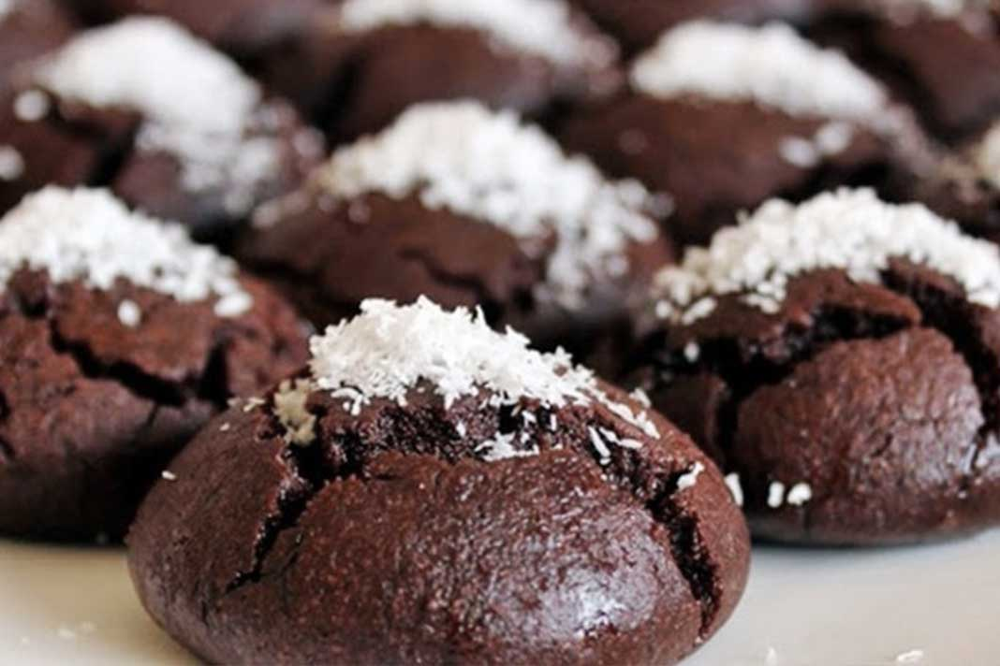

Brownie Kurabiye
Merhaba, bu sayfada en sevdiğim kurabiyelerden biri olan Brownie Kurabiye tarifini anlatacağım. Hem yumuşak, hem kurabiye. Ve de çikolata seviyorsanız denemenizi tavsiye ederim.

Brownie Kurabiye Tarifi İçin Malzemeler
- 125 gram margarin (oda sıcaklığında)
- 1 çay bardağı pudra şekeri
- 1 çay bardağı sıvı yağ
- 1 paket vanilya
- 1 paket kabartma tozu
- 3 yemek kaşığı kakao
- 3 su bardağı un
- 1 adet yumurta
Şerbeti İçin:
- 1 su bardağı su
- 1 su bardağı toz şeker
- Birkaç damla limon
Brownie Kurabiye Yapılışı
- Şerbeti hazırlamak için su ve şekeri minik bir tencere koyun ve ocağa koyup altını açın. Kaynamaya başlayınca limon sıkın. 6 dakika daha kaynadıktan sonra altını kapatın.
- Kurabiye malzemelerini bir kaba koyup ele yapışmayacak bir hamur olana kadar yoğurun.
- Fırın tepsisine yağlı kağıt serin. Kurabiyelere yuvarlak şekil verip tepsiye koyun.
- Kurabiyeleri fırında 200 derecede 10 dakika pişirin.
- Kurabiyeleri fırından çıkarın ve ilk sıcaklığı gittikten sonra tek tek şerbete batırıp çıkarın.
- Kurabiyeler hazır! İsterseniz üzerine hindistan cevizi dökerek servis edebilirsiniz.
Afiyet Olsun :)